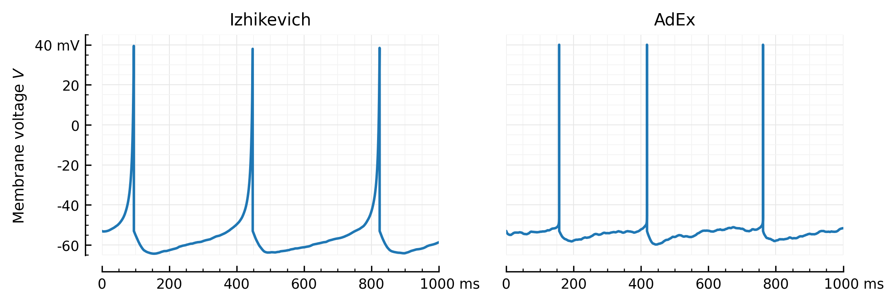

2023-06-23__Vm_traces_AdEx_Izh__Brian
Contents
2023-06-23__Vm_traces_AdEx_Izh__Brian¶
from brian2 import *
seed(1234)
defaultclock.dt
\[100.00000000000001\,\mathrm{\mu}\mathrm{s}\]
# AdEx LIF neuron params (cortical RS from Naud 2008)
C = 104 * pF
g_L = 4.3 * nS
E_L = -65 * mV
V_T = -52 * mV
D_T = 0.8 * mV
Vs = 40 * mV
Vr = -53 * mV
a = -0.8 * nS
b = 65 * pA
tau_w = 88 * ms
\[88.0\,\mathrm{m}\mathrm{s}\]
from scipy.special import lambertw
E_T = E_L - D_T * real(lambertw(-exp((E_L-V_T)/D_T), -1))
\[-49.63585597104162\,\mathrm{m}\mathrm{V}\]
k = g_L / (E_T - E_L)
k / (nS / mV)
0.2798724088953702
E_e = 0 * mV
E_i = -80 * mV
we = 8 * nS
wi = 8 * nS
tau = 7 * ms;
Input neurons:
N = 6500
# N = 500
μₓ = 4 * Hz
σ = sqrt(0.6)
μ = log(μₓ / Hz) - σ**2 / 2
1.0862943611198905
Ne = N * 4//5
5200
izh = "dV/dt = ( k*(V - E_L)*(V - E_T) -I -w) / C : volt"
adx = "dV/dt = ( -g_L*(V - E_L) + g_L * D_T * exp((V-V_T)/D_T) -I -w) / C : volt"
eqs = lambda F: f"""
{F}
dw/dt = (a*(V - E_L) - w) / tau_w : amp
I = g_e * (V - E_e) + g_i * (V - E_i) : amp
dg_e/dt = -g_e / tau : siemens
dg_i/dt = -g_i / tau : siemens
"""
def network(F):
n = NeuronGroup(1, eqs(F), threshold="V > Vs", reset="V = Vr; w += b", method='euler')
n.V = Vr
seed(1234)
rates = lognormal(μ, σ, N) * Hz;
P = PoissonGroup(N, rates)
Se = Synapses(P, n, on_pre="g_e += we")
Si = Synapses(P, n, on_pre="g_i += wi")
Se.connect("i < Ne")
Si.connect("i >= Ne")
M = StateMonitor(n, ["V", "I", "w"], record=0)
S = SpikeMonitor(n)
objs = [n, P, Se, Si, M, S]
return *objs, Network(objs)
n, P, Se, Si, M, S, net = network(izh)
n
NeuronGroup 'neurongroup' with 1 neurons.
Model:
\begin{align*}I &= g_{e} \left(- E_{e} + V\right) + g_{i} \left(- E_{i} + V\right) && \text{(unit of $I$: $\mathrm{A}$)}\\
\frac{\mathrm{d}V}{\mathrm{d}t} &= \frac{- I + k \left(- E_{L} + V\right) \left(- E_{T} + V\right) - w}{C} && \text{(unit of $V$: $\mathrm{V}$)}\\
\frac{\mathrm{d}g_{e}}{\mathrm{d}t} &= - \frac{g_{e}}{\tau} && \text{(unit of $g_{e}$: $\mathrm{S}$)}\\
\frac{\mathrm{d}g_{i}}{\mathrm{d}t} &= - \frac{g_{i}}{\tau} && \text{(unit of $g_{i}$: $\mathrm{S}$)}\\
\frac{\mathrm{d}w}{\mathrm{d}t} &= \frac{a \left(- E_{L} + V\right) - w}{\tau_{w}} && \text{(unit of $w$: $\mathrm{A}$)}\end{align*}
Spiking behaviour:
Model:
- Threshold condition:
V > Vs - Reset statement(s):
V = Vr; w += b
net.store()
net.restore()
we = 0.004 * nS
wi = 4 * we
net.run(1000 * ms, report='text')
Starting simulation at t=0. s for a duration of 1. s
1. s (100%) simulated in 4s
%run lib/plot.py
def plotV(V, title, ax=None):
ax = plotsig(V, "Membrane voltage", False, ylim=[-70,45], ax=ax)
ax.set_title(title, loc='center')
plotV(M.V[0], "Izhikevich")
# savefig("../thesis/figs/Vm_izh.pdf")
def plotV(V, title, ax=None):
ax = plotsig(V, "Membrane voltage $V$", False, ylim=[-65.1, 45], ax=ax, xlabel=None)
ax.set_title(title, loc='center')
plotV(M.V[0], "Izhikevich")
# savefig("../thesis/figs/Vm_izh.pdf")
n, P, Se, Si, Mx, Sx, netx = network(adx)
netx.store()
n.equations['V']
\[\frac{\mathrm{d}V}{\mathrm{d}t} = \frac{D_{T} g_{L} e^{\frac{V - V_{T}}{D_{T}}} - I - g_{L} \left(- E_{L} + V\right) - w}{C}\]
seed(1234)
netx.restore()
seed(1234)
we = 0.0122 * nS
wi = 4*we
netx.run(1000 * ms, report='text')
Starting simulation at t=0. s for a duration of 1. s
1. s (100%) simulated in 4s
def ceil_spikes_(V, t, spiketimes, V_ceil=Vs):
i = np.searchsorted(t, spiketimes)
V[i] = V_ceil
return V
def ceil_spikes(M, S, var='V', n=0):
V = getattr(M, var)[n]
spikes = S.t[S.i == n]
return ceil_spikes_(V, M.t, spikes)
Vx = ceil_spikes(Mx, Sx);
plotV(Vx, "AdEx")
savefig("../thesis/figs/Vm_adx.pdf")
plotV(Vx, "AdEx")
savefig("../thesis/figs/Vm_adx.pdf")
def rm_ticks_and_spine(ax, where="bottom"):
# You could also go `ax.xaxis.set_visible(False)`;
# but that removes gridlines too. This keeps 'em.
ax.spines[where].set_visible(False)
ax.tick_params(which="both", **{where: False})
if where in ("bottom", "top"):
ax.set_xlabel(None)
else:
ax.set_ylabel(None)
fig, axs = plt.subplots(ncols=2, sharey=True, figsize=(8, 2.4))
plotV(M.V[0], "Izhikevich", ax=axs[0])
plotV(Vx, "AdEx", ax=axs[1])
rm_ticks_and_spine(axs[1], "left")
# plt.tight_layout()
savefig("../thesis/figs/Vm_Izh_vs_AdEx.pdf")

Noise¶
spikeSNR = 10
spike_height = Vs - E_L
σ_noise = spike_height / spikeSNR
\[10.5\,\mathrm{m}\mathrm{V}\]
seed(1234)
y = Vx + randn(Vx.size) * σ_noise
\[\left[\begin{matrix}-48.04993078 & -65.55391251 & -38.05253191 & \dots & -62.71750336 & -56.89701231 & -54.36516977\end{matrix}\right]\,\mathrm{m}\mathrm{V}\]
fig, axs = plt.subplots(nrows=2, figsize=(2,3), sharex=True)
plotsig(Vx, "Membrane voltage", ylim=[-100,60], ax=axs[0])
rm_ticks_and_spine(axs[0], "bottom")
plotsig(y, "..with VI noise", ylim=[-100,60], ax=axs[1], xlabel=None);
plt.subplots_adjust(hspace=0.4)
savefig_thesis("VI_noise")
Saved at `../thesis/figs/VI_noise.pdf`